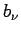

Inhalt Index DeskTop Bronstein

 Integraltransformationen Laplace-Transformation Rücktransformation in den Originalbereich Reihenentwicklungen
Integraltransformationen Laplace-Transformation Rücktransformation in den Originalbereich Reihenentwicklungen


Ist F(p) ist eine meromorphe Funktion, die sich als Quotient zweier ganzer, also in überall konvergente Potenzreihen entwickelbare Funktionen ohne gemeinsame Nullstellen darstellen läßt, und die daher in eine Summe aus einer ganzen Funktion und unendlich vielen Partialbrüchen zerlegbar ist, dann gilt der Zusammenhang
| (15.44) |
Dabei sind die Pole 1. Ordnung der Funktion , die  die zugehörigen Residuen, die gewisse Ordinaten und gewisse Kurvenzüge, etwa Halbkreise in der in der folgenden Abbildung angedeuteten Art.
Die Lösung f(t) erhält man in der Form
| (15.45) |
für  strebt, was allerdings nicht immer leicht nachzuweisen ist. In manchen Fällen, wenn z.B. der rationale Anteil der meromorphen Funktion F(p) identisch Null ist, bedeutet das eben gewonnene Ergebnis eine formale Übertragung des HEAVYSIDEschen Entwicklungssatzes auf meromorphe Funktionen.
strebt, was allerdings nicht immer leicht nachzuweisen ist. In manchen Fällen, wenn z.B. der rationale Anteil der meromorphen Funktion F(p) identisch Null ist, bedeutet das eben gewonnene Ergebnis eine formale Übertragung des HEAVYSIDEschen Entwicklungssatzes auf meromorphe Funktionen.